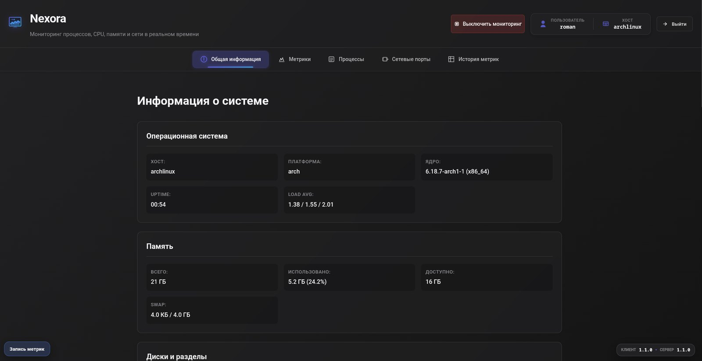
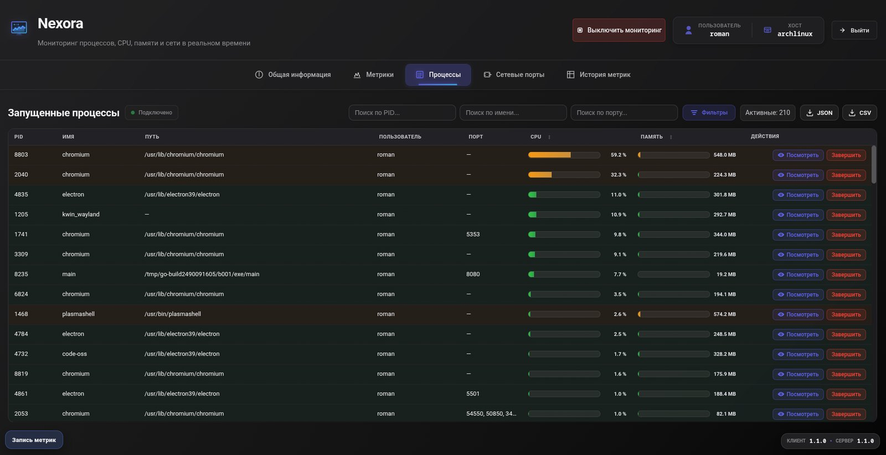
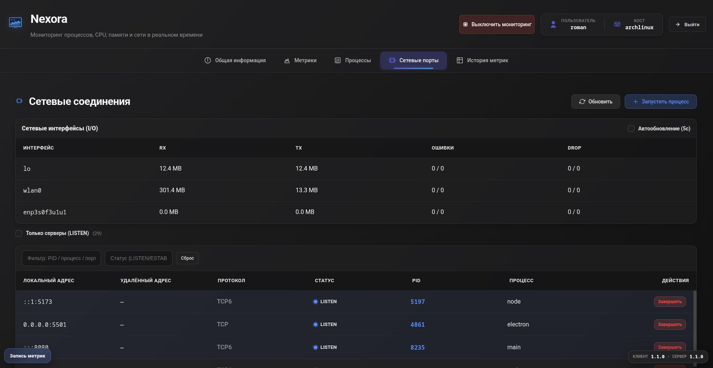
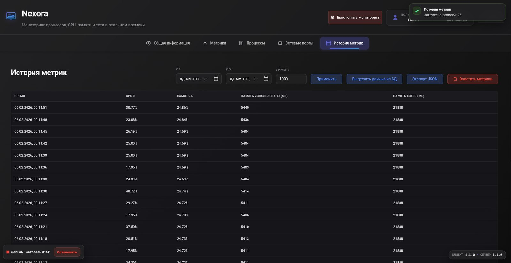

Запуск процесса из панели
Команда, аргументы, рабочая папка и пресеты для частых случаев: Vite, npm, node, Python HTTP. Если порт уже занят сервером, окно подсказывает выбрать другой.
Что происходит с машиной прямо сейчас: CPU, память, процессы и сетевые порты в одной живой панели. Агент на Go собирает метрики и отдаёт их по WebSocket, веб-интерфейс на Vue 3 показывает и управляет.

Чтобы понять, что грузит Linux-машину, обычно открывают top, потом ss или lsof ради портов, потом smartctl ради дисков, и каждый раз по-своему читают вывод. Историю при этом никто не хранит: что было пять минут назад, уже не видно.
Nexora собирает это в одну панель: живые графики, таблицу процессов с фильтрами, сетевые порты с владельцами, историю метрик в базе и запись сессии по порогам. Процесс можно завершить или запустить новый, не открывая терминал.
top / htopграфики CPU и памяти, процессыss / lsof -iпорты, соединения, владельцыkill PIDзавершение в один кликsmartctl вручнуюздоровье дисков в панелиsarистория метрик в SQLiteМетрики не опрашиваются по запросу на каждый кадр. Агент держит кэш и обновляет его по своему расписанию, а клиенты подписаны на три потока. Мониторинг можно выключить из интерфейса, и сбор остановится вовсе.
/ws/cpuраз в 1 с/ws/memoryраз в 3 с/ws/processesраз в 5 сТа же навигация, что в приложении. Каждый раздел решает одну задачу, и у каждого свой способ показать данные: график, таблица, карточки.




Команда, аргументы, рабочая папка и пресеты для частых случаев: Vite, npm, node, Python HTTP. Если порт уже занят сервером, окно подсказывает выбрать другой.
Сессия записи на заданное время: процессы, превысившие порог CPU или памяти, попадают в базу. Сколько осталось, видно в углу экрана, остановить можно раньше.
Кто слушает порт, кто держит соединение, фильтр LISTEN и остальных. Завершить владельца порта можно прямо из строки.
SMART и температура через smartctl. Где утилиты нет или прав не хватает, панель прямо пишет «недоступно», а не показывает пустоту.
Процессы и историю метрик можно выгрузить в JSON или CSV и разобрать в любимом инструменте.
Тот же агент открывает текстовое меню: процессы по загрузке CPU, фоновый мониторинг по порогу, завершение по PID или имени. Удобно на сервере по SSH.
Панель умеет завершать и запускать процессы, поэтому открывается только после входа. Экран входа без лишнего: логин, пароль, одна кнопка.
Агент и клиент развиваются отдельно и сверяют версии: агент отдаёт свою на /api/version, панель показывает обе в углу экрана.
module github.com/RZhurakovskiy/agent require ( github.com/shirou/gopsutil // CPU, память, процессы, сеть github.com/gorilla/websocket // три потока метрик github.com/mattn/go-sqlite3 // история и сессии записи ) // graceful shutdown, CORS, кэш метрик под мьютексом // CLI-меню: тот же агент работает и без браузера
{
"vue": "^3.5", // Composition API
"pinia": "^3.0", // состояние разделов
"vue-router": "^4.6",
"chart.js": "^4.5", // живые графики
"axios": "^1.13"
}
// Vite 7 + TypeScript, сервисы API и WS через DI-контейнер
Nexora закрывает ежедневный вопрос «что сейчас грузит машину и кто занял порт» одним окном. Лучше всего работает на Linux; на других системах основное доступно, а то, чего нет, честно помечено.